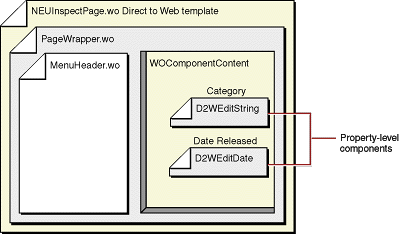
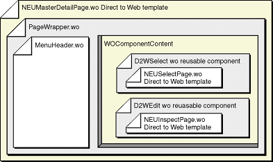

| PATH |

Figure 3-1 shows the components in
an edit page for the Movie entity in the Neutral look. The top-level component is
a Direct to Web template called NEUInspectPage.wo. It contains the
project's PageWrapper.wo component, which defines the overall layout
of the page. The PageWrapper.wo component contains the
MenuHeader.wo component, which defines the Direct to Web navigation
menu. See "The Structure of a
Direct to Web Project" for more information about PageWrapper.wo
and MenuHeader.wo.
Figure 3-1 Edit page component organization
The PageWrapper.wo component content comes
from the NEUInspectPage Direct to Web template. This content includes HTML input
elements for the visible attributes of an entity. Each attribute appears in a
separate property-level component that depends on the attribute's type. The
category attribute displays using a D2WEditString component. The
dateReleased attribute displays using a D2WEditDate
component.
Pages with nested Direct to Web
templates contain Direct to Web reusable components. Figure
3-2 shows a master detail page in the Neutral look. The
NEUMasterDetail.wo Direct to Web template contains
PageWrapper.wo which in turn, contains MenuHeader.wo.
NEUMasterDetail.wo also contains two reusable components that act as
interfaces to the templates they display: a D2WSelect component and a D2WEdit
component. Each of these components is actually a WOSwitchComponent that displays
a template-the D2WSelect component displays a NEUListPage Direct to Web template
and the D2WEdit component displays a NEUInspectPage Direct to Web
template.
Figure 3-2 Master-detail page component organization

© 2001 Apple Computer, Inc.